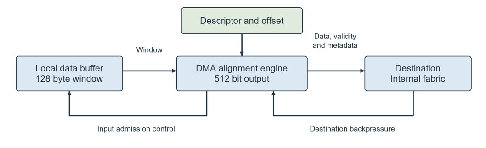
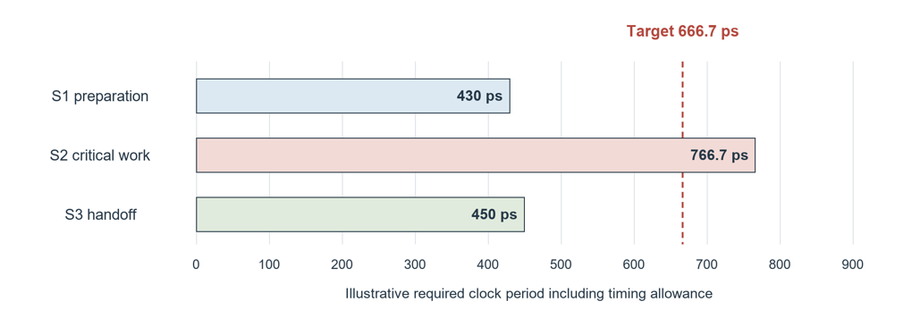
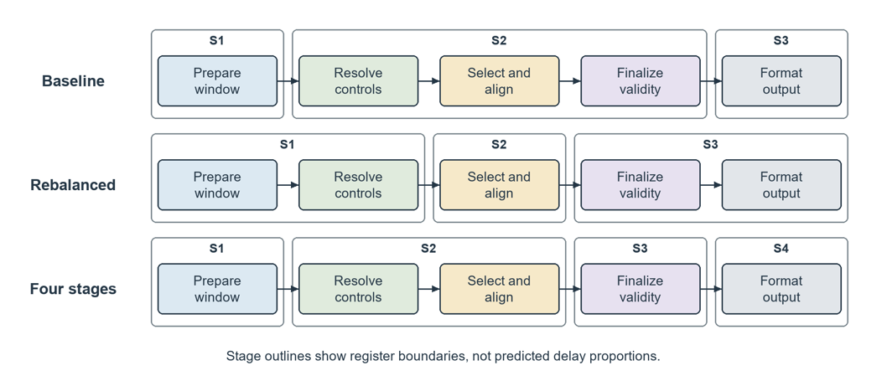
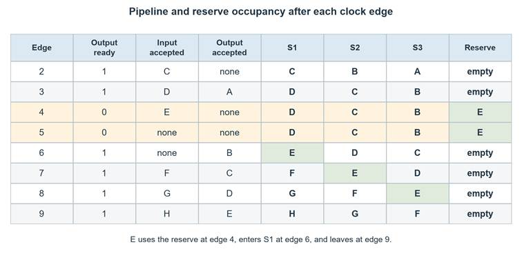
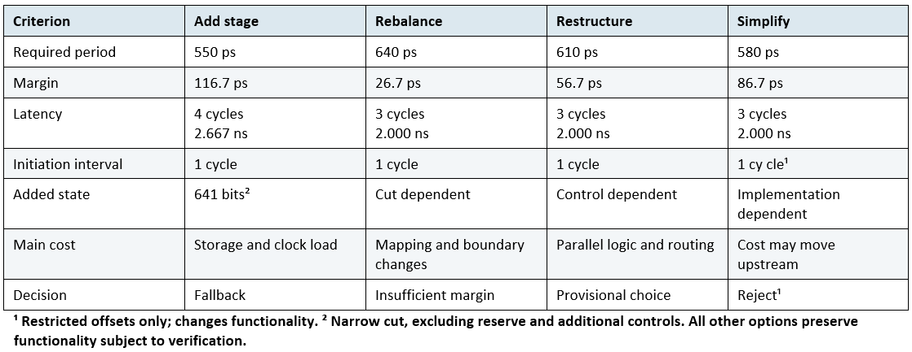

Originally published on LinkedIn. View original article ↗

Closing Timing Without Losing System Performance
A 512-bit DMA alignment datapath targets 1.5 GHz and one operation per cycle, but its critical stage needs a period 15 percent above target. One extra latency cycle is allowed. Should we add a stage, rebalance registers, restructure logic, or simplify functionality? The decision must preserve throughput, correctness, and the power, area, and latency budgets.
The contract and the DMA boundary
The alignment block sits between a DMA data buffer and an internal fabric. For each accepted operation, upstream logic supplies a complete 128 byte (1024 bit) selection window, offset, and metadata. The block selects 64 consecutive bytes (512 bits) at any offset from 0 to 63. Window assembly and its supply bandwidth are upstream assumptions.

Accept one operation per cycle when input and output are available; preserve order and retain all accepted work under backpressure. Unstalled latency is measured from acceptance of a complete window and descriptor to output acceptance: edge 0 to edge 3 initially, at most edge 4 after modification. Memory access and window assembly are outside that boundary. Cancellation is permitted only before the final output offer.
A wider window does not require a faster output clock
At offset 13, select window bytes 13 through 76. In a sequential stream of 64 byte words A, B, C, output 0 combines the last 51 bytes of A with the first 13 of B; output 1 uses the last 51 of B and first 13 of C. Reusing B allows one new 512 bit word per cycle after startup. Boundaries, short transfers, and stalls can reduce throughput.
Independent descriptors need not share windows. Fresh 128 byte windows every cycle require 192 GB/s of internal supply, although selected output is only 64 bytes × 1.5 GHz = 96 GB/s. External memory traffic depends on reuse and caching. Buffer ports and assembly logic must sustain the assumed rate; a FIFO cannot fix a sustained deficit.
The entire alignment pipeline uses 1.5 GHz, including 1024 bit window and 512 bit result registers. By contrast, a lossless 1024 to 512 converter must forward two output beats per input: sustaining 1024 new bits/cycle at 1.5 GHz requires 512 bits/cycle at 3 GHz, or input acceptance every two cycles at equal clocks and utilization. This aligner selects bytes rather than forwarding every window byte.
Find the timing problem before adding depth
At 1.5 GHz, each pipeline stage has a timing budget of 666.7 ps. The critical stage requires 766.7 ps, exceeding that budget by 100 ps, or 15%. Without improving the implementation, this limits the clock frequency to approximately 1.304 GHz. All values below include register and clock allowance, rather than pure combinational delay, and are illustrative rather than measured IP results.

Inspect startpoint, endpoint, cell and net delays, and control arrival. Serial logic suggests splitting or restructuring; late controls suggest earlier decode; wire delay and fanout require physical partitioning and placement work. Spare S1/S3 budgets cannot simply be added to S2: moving work changes dependencies, wiring, and stored state.
Here, descriptor and offset are available in S1, but controls resolve in S2 before selection, alignment, and validity completion. The descriptor also permits output mask generation independently of data values. Ask whether decode can move earlier, mask logic can run in parallel, unnecessary priority can be removed, and final validity can move toward S3. Count the state at each proposed cut.

Compare all the options using the same cell library, corners, uncertainty, interface constraints, and physical assumptions. Early synthesis timing is not routed closure.
Four options under the same requirements
1 Add a fourth stage
Split alignment from final validity processing. Carry data, byte validity, transaction identity, and required cancellation and stall state together. Every field must advance, hold, and invalidate with its operation. A data only cut is incomplete.
With 64 metadata bits and one entry valid bit, a cut after selection stores 512 + 64 + 64 + 1 = 641 bits. Retaining the full window stores 1024 + 128 + 64 + 1 = 1217 bits, or 576 more. These inventories assume one validity bit per byte and exclude additional decode, cancellation tags, flow control, and reserve storage. Count any other crossing controls; bit counts are not technology independent area or power estimates.
Choose another stage only if it interrupts the actual critical cone and delivers enough physical timing margin within latency, clock load, state, and power budgets. A register after the entire slow cone does not divide it.
2 Retime or rebalance the existing stages
Move control preparation toward S1 and final validity toward S3, leaving selection and alignment in S2. Automatic retiming is constrained by equivalence and tool settings; architectural rebalancing may require RTL changes. Verify cycle relationships, reset, enables, transaction association, bubbles, and stalls.
Preserving three cycles does not guarantee the same register count: boundary widths and register replication can change. Neighboring stages must absorb the moved work without creating timing or control fanout problems. Delays must be remeasured after movement.
3 Restructure the logic
Prepare controls earlier and compute the mask alongside alignment, then combine matching results at a boundary. This is legal here because mask calculation does not depend on selected data values. For valid input W[0…127] and offset 13, output byte j = W[13+j], j = 0…63. With 48 valid output bytes, validity bits 0…47 are set and the remaining 16 are clear. Data and mask must stay associated through every stall.
Remove priority only after proving alternatives mutually exclusive or defining overlap behavior. Flatter RTL does not guarantee faster hardware: parallel logic may increase routing, fanout, or area. Check mapped timing and equivalence for every legal offset and descriptor mode.
4 Simplify functionality
Supporting only offsets 0, 16, 32, and 48 can reduce selection work, but violates the original any byte offset contract. Reject it unless the product explicitly accepts the restriction. Include any upstream realignment, software copying, buffer layout constraints, and resulting bandwidth, latency, and compatibility cost.
What the architecture review must preserve
The same accepted operation must produce the same selected bytes, validity, and identity, in order, under all legal stalls and cancellations. A timing gain is useful only if the revised stage boundaries and logic preserve that behavior. Start by restructuring and balancing; retain another stage as a measured fallback, not an automatic solution.
Check dependencies and system behavior
Latency is not initiation interval
Independent operations with available windows can still launch every cycle in a four-stage pipeline. Independence does not prove window reuse or sufficient upstream bandwidth. If the next offset depends on the previous result, moving its availability from three to four cycles can increase the initiation interval from three to four. Forwarding or earlier state updates may restore overlap, but add selection, wiring, timing paths, and recovery rules for canceled work.
Backpressure requires reserved capacity
In this example, A, B, C, D, E, and so on represent separate operations in their arrival order. Each operation includes its data, byte validity, and transaction metadata. S1, S2, and S3 are the three processing stages. The reserve slot is an extra storage location before S1 that temporarily holds an accepted operation when S1 cannot advance. In the globally held pipeline below, the source observes a stop one edge late. E is still accepted while B, C, and D remain held, so an initially empty ingress reserve slot captures E. Registering the stop signal without that capacity can lose accepted work.

With at most one acceptance per edge, two further accepting edges and no departures require two initially free slots. This is an occupancy bound, not a universal FIFO rule. Trace stops detection, admission changes, and already permitted arrivals independently of forward latency. Registered stream slices illustrate the timing versus buffering tradeoff.
Cancellation and variable latency
The first offer with output valid in the final stage is the commit point. Cancellation wins over entry at the same edge; afterward the offered operation must remain stable until accepted. Clearing internal valid cannot retract accepted output. Track identity through movement, prolonged stalls, and simultaneous admission. If fast and slow paths coexist, preserve order by holding later results where needed; size queues for bursts, not only average traffic.
Practice check
For the four-stage design, suppose two more full windows can arrive after a stop, with no departures. Each reserve slot holds 1024 data + 128 validity + 64 metadata + 1 valid = 1217 bits. Two free slots require 2434 bits, separate from added pipeline state and control overhead.
Four cycles at 1.5 GHz equal 2.667 ns. Independent operations retain 96 GB/s peak. If the next offset becomes available only at previous output acceptance, with no forwarding and earliest same edge reuse, initiation interval is at least four: 375 million operations/s or 24 GB/s. Preparation delays and stalls lower it further. Reserve storage protects work; it does not remove a dependency.
Compare options and make the decision
These are illustrative candidate outcomes, not synthesis results. Margin is 666.7 ps minus worst required period. Require 40 ps residual margin beyond allowances already included; a real project must set its own criterion.

Select restructuring provisionally: 56.7 ps margin preserves three cycles and exceeds the 40 ps criterion. Rebalancing alone gives only 26.7 ps. The fourth stage offers 116.7 ps and is the fallback if physical results require more margin within the state and power budgets. Verify logic and boundary equivalence, stalls, cancellation, and physical and power results before accepting any option.
At fixed 1.5 GHz, every compliant initiation interval one candidate has the same 96 GB/s peak useful output. Higher achievable maximum frequency alone does not improve throughput at the chosen operating clock. This comparison is conditional, not proof of minimum cost.
For the next review: define the full contract and supply bandwidth; locate serial, control, and wire delay; identify recurrences; assess rebalancing and restructuring; count added state, clock load, reserve, and cancellation cost; compare under identical conditions; choose the lowest demonstrated cost that meets the contract and record reconsideration conditions.
If another stage fixes timing but adds a cycle to a feedback loop, have we improved the architecture, or only the timing report?